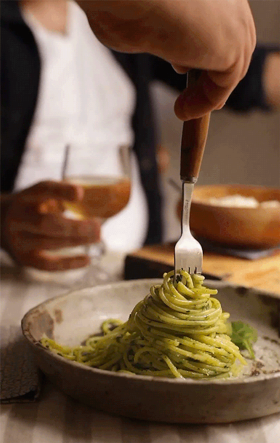

Pesto Pasta

Presto Pasta: an enchanting fusion of Italian tradition and contemporary flair.
Delight in al dente perfection, kissed by savory sauces and vibrant herbs.
Each twirl of pasta promises a culinary journey through Mediterranean landscapes, a symphony of flavors that captivates the palate and ignites the senses with every delectable bite.
Ingredients
- 6 ounces spaghetti, reserve 1/2 cup starchy pasta water
- 1/3 to 1/2 cup basil pesto or vegan pesto
- Extra-virgin olive oil, for drizzling
- Fresh lemon juice, as desired
- 4 cups arugula
- Freshly grated Parmesan or vegan Parmesan
- Pinches of red pepper flakes
- Sea salt and freshly ground black pepper
Instructions
- Cook the pasta in a large pot of salted boiling water according to package directions or until al dente.
- Drain the pasta and toss with a tiny bit of olive oil.
- In a large skillet over very low heat, add the pesto, 1/4 cup of the reserved pasta water and stir to combine.
- Add the pasta and toss to coat, and more pasta water as needed to create a loose sauce. The amount of water needed will depend on thickness of your pesto.
- Turn the heat off. Add lemon juice, salt, and pepper, to taste. Then, add the arugula and toss to barely wilt. Garnish with the red pepper flakes and serve.